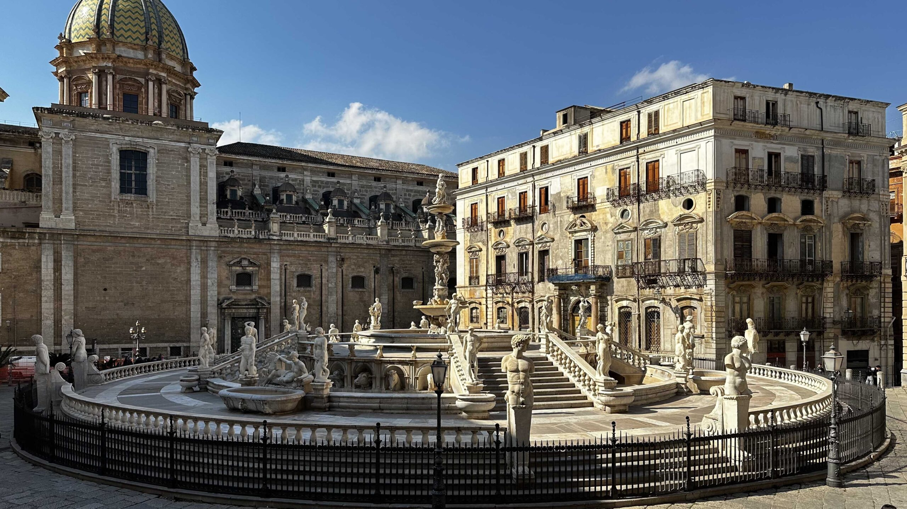

Piazza Pretoria, situata nel cuore del centro storico di Palermo a pochi passi dai Quattro Canti, è una delle piazze più spettacolari d'Italia, celebre per la sua monumentale fontana manierista.
L'elemento centrale è la Fontana Pretoria, realizzata nel XVI secolo da Francesco Camilliani. È popolarmente conosciuta come "Piazza della Vergogna" per diversi motivi storici e leggendari: le 48 figure mitologiche nude; costi eccessivi, il popolo palermitano gridò alla "vergogna" per le enormi somme spese; le demolizioni per far spazio alla struttura.
Le attrazioni principali sono:
Posizione: La zona è interamente pedonale e facilmente raggiungibile a piedi percorrendo via Maqueda o via Vittorio Emanuele.